NETWORKING AND SECURITY
Networking
A computer network is a system in which multiple computers are connected to each other to share information and resources. Computer networks can be categorized in several different ways.
For example, typically span a single home, school, or small office building come under LAN, whereas wide area networks (WANs), reach across cities, states, or even across the world. The internet is the world's largest public WAN.
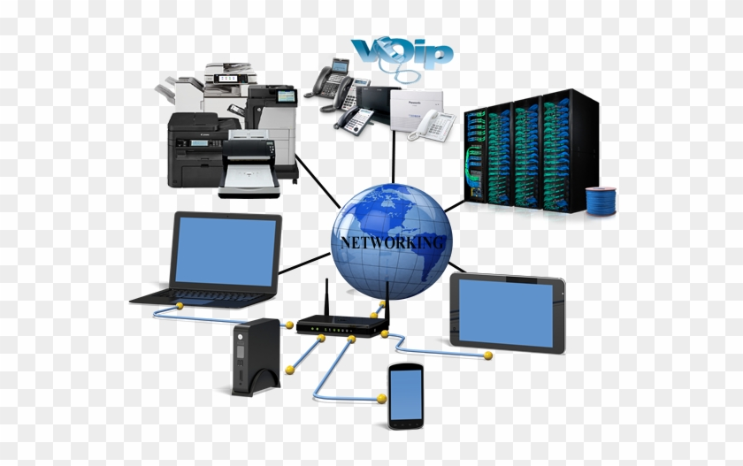
Prerequisite- It's important to understand OSI model.
OSI Model
OSI stands for Open Systems Interconnection. It is a 7 layer architecture with each layer having specific functionality to perform. All these 7 layers work collaboratively to transmit the data from one host to another across the globe.
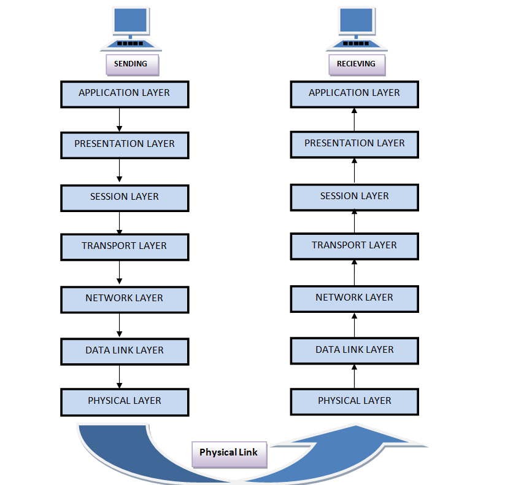
Let's see below to know more about how data or packets are transmitted from one layer to other layer?
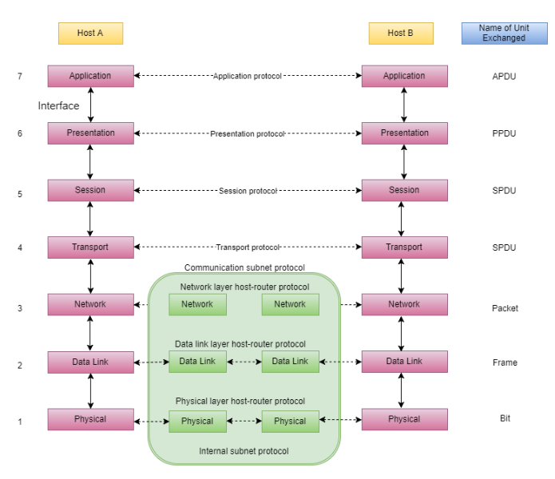
1) Physical Layer
The lowest layer of the OSI reference model is the physical layer. It is responsible for the actual physical connection between the devices.
The physical layer contains information in the form of bits. It is responsible for transmitting individual bits from one node to the next. When receiving data, this layer will get the signal received and convert it into 0s and 1s and send them to the Data Link layer, which will put the frame back together. Hub, Repeater, Modem, Cables are Physical Layer devices.
2) Data Link Layer
The data link layer is responsible for the node to node delivery of the message. The main function of this layer is to make sure data transfer is error-free from one node to another, over the physical layer. When a packet arrives in a network, it is the responsibility of DLL to transmit it to the Host using its MAC address. Data Link Layer is divided into two sub layers :
Framing, Error Control, Physical Addressing, Flow control, Access control are functions of DDL. Switches and bridges are devices of DDL.
3) Network Layer
Network layer works for the transmission of data from one host to the other located in different networks. It also takes care of packet routing i.e. selection of the shortest path to transmit the packet, from the number of routes available. The sender & receiver’s IP address are placed in the header by the network layer. The functions of the Network layer are :
Segment in network layer is referred as Packet.Network layer is implemented by networking devices such as routers.
4) Transport Layer
Transport layer provides services to application layer and takes services from network layer. The data in the transport layer is referred to as Segments. It is responsible for the End to End Delivery of the complete message.
The transport layer also provides the acknowledgement of the successful data transmission and re-transmits the data if an error is found. Data in the Transport Layer is called as Segments.
Transport layer is operated by the Operating System. It is a part of the OS and communicates with the Application Layer by making system calls. Transport Layer is called as Heart of OSI model.
5) Session Layer
This layer is responsible for establishment of connection, maintenance of sessions, authentication and also ensures security. The functions of the session layer are : session establishment, maintenance and termination etc.
6) Presentation Layer
Presentation layer is also called the Translation layer.The data from the application layer is extracted here and manipulated as per the required format to transmit over the network. The functions of the presentation layer are :
7) Application Layer
This layer is also known as the desktop Layer. The application layer is the top-most layer of OSI model.
This layer will communicate with the end users & user applications. It provides services directly to user applications. It enables to access the network.
It provides user interfaces and support for services such as email, remote file access and transfer, shared database management and other types of distributed information services.
At the very top of the OSI Reference Model stack of layers, we find Application layer which is implemented by the network applications. These applications produce the data, which has to be transferred over the network. This layer also serves as a window for the application services to access the network and for displaying the received information to the user.
IP Address
An IP address, or simply an "IP," is a unique address that identifies a device on the Internet or a local network. It allows a system to be recognized by other systems connected via the Internet protocol. IP address is an address having information about how to reach a specific host, especially outside the LAN.
IP address are as much as important as a person's unique identification card or number. It helps in connecting our computer to other devices on your network and all over the world. IP addresses allow computers and devices to communicate with each other over the internet. It assurs security for your own benefits and promotes etc. Without ip address we'll never be able to send or receive any info.
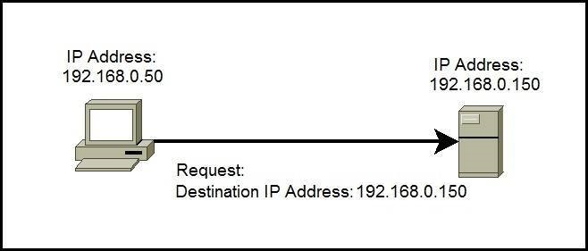There are two primary types of IP address formats used today — IPv4 and IPv6.
IPv4
Internet Protocol version 4, generally referred to as IPv4. An IPv4 address comprises four numbers, each ranging from 0 to 255, which are separated by periods. IPv4 is 32 bit binary number. For example, Avast’s IP address is 5.62.42.77.
IPv6
Internet Protocol version 6, grenerally referred to as IPv6. An IPv6 address consists of eight groups of four hexadecimal digits. For instance- 3001:0da8:75a3:0000:0000:8a2e:0370:7334 .
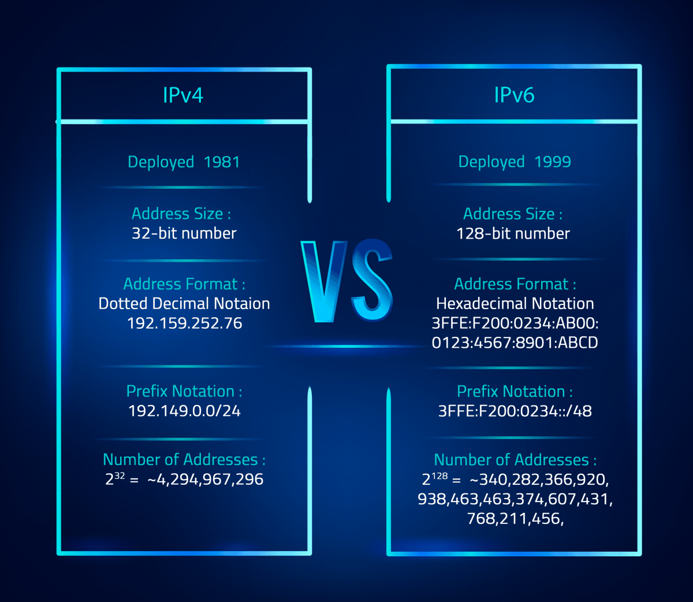
Private and Public IP
Private IP:
Private ip address of a system is the IP address which is used to communicate within the same network. Using private IP data or information can be sent or received within the same network. It is used within the LAN. Assigned by user/admin. It can be view and edit.
Public IP:
Public IP address of a system is the IP address which is used to communicate outside the network. Public IP address is basically assigned by the ISP (Internet Service Provider). It is used outside the LAN. We can view them but can't edit.

NAT
NAT stands for Network Address Translation. NAT is the process of converting public IP into private IP and vice-versa. Router is responsible for this conversion in background.
NID and BID
Before understanding Classes and Subnetting, it's necessary to understand the concept of NID and BID.
NID(Network id):
Network id is a unique id for recoganisation of the host/user in the network. NID represents whole network. It is a particular id which is given to an individual network. It can't be assigned to any individual device. It is always 192.168.1.0 .
BID(Broadcast id):
Broadcast address is the address where a source will send the information to all the host connected to the single network.It is always 192.168.1.1 .
Subnetting and Classes
Subnetting- Dividing the network into smaller contiguous networks or subnets is called subnetting.Computer networks can be broken into many networks or small networks can be combined to form large networks depending upon our needs. This is done by IP subnetting and supernetting.
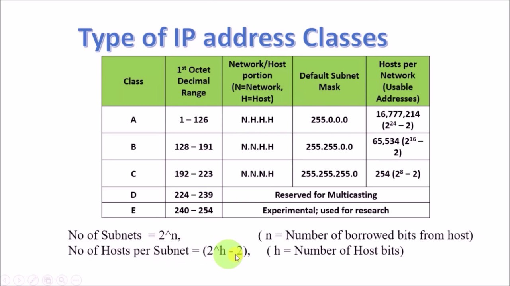
Router
Router is a networking device that forwards data packets between computer network. Routing: It is used to find the best possible way or path to send or receive the packets.
Let us understand this by a very general example, suppose we search for www.google.com in our web browser then this will be a request which will be sent from our system to the google`s server to serve that webpage, now our request which is nothing but a stream of packets don`t just go the google`s server straightaway they go through a series of networking devices known as router which accepts this packets and forwards them to correct path and hence it reaches to the destination server.
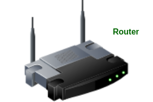
Concepts which come under router:
1) Router ports:
a) Interface port:
It is used to connect router with other devices like switch, Router, PC etc. Ethernet interface, FastEthernet interface, GigabitEthernet interface, Serial interface are types of it.
b) Line port:
It is used to configure the router. Console port and auxilary port are types of it.
2) Router rules:
3) Router modes:
4) Router configuration
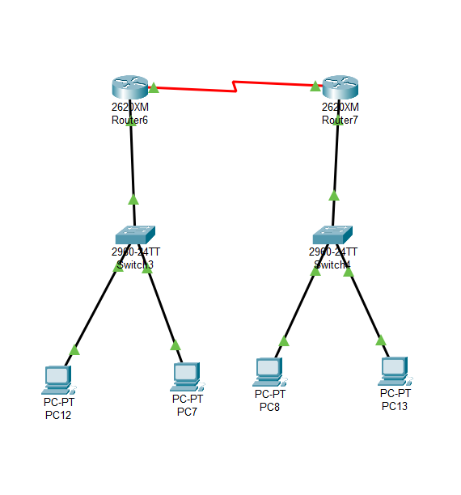
There are two types of router :
1) Static Router:
Static Routing is the process in which static routes are manually added to the routing table. We will add unknown NID in ip table.
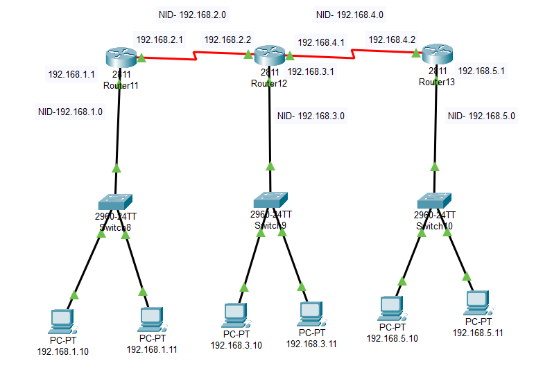
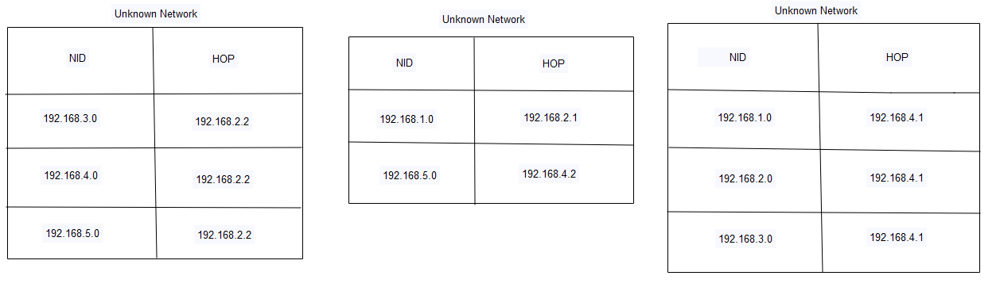
2) Dynamic Router:
This is opposite to the typical traditional static network routing. We will add known NID in ip table. Dynamic Router messages also share the information with different routers, that make use of the very same protocol.Dynamic routing is considered easy to configure on large networks and also it is more intuitive than static routing at a selection of the best route, detection of the route changes and also a discovery of the remote networks.
a) Distance Vector Protocol(RIP: Routing Information Protocol)-
HOP should be minimum.
b) Link State Protocol(OSPF: Open Shortest Path First)-
Bandwidth should be maximum.
c) Advance Distance Vector Protocol(EIGRP: Enhanced Interior Gateway Protocol)-
It consider bandwidth, delay time and travel time to find out the best possible path. It uses autonomous number and their range between 0-65535. It should be same for all routers of a particular area. It uses BGP i.e. Border Gateway Protocol to connect or establish connection between two or more different cities having different autonomous number.
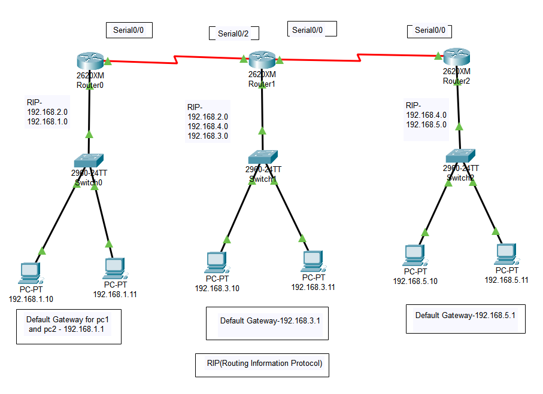
Switch
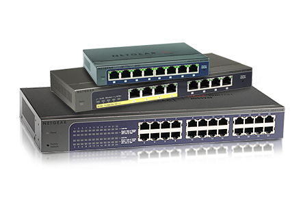
Concepts which comes under switch:
1) Switch ports.
2) Switch mode: These modes are similar to router.
3) Switch configuration.
CLI:
VLAN
VLAN Configuration Steps:
Implementation on CLI:
STEP 1:
SWITCH>EN
SWITCH#CONF T
SWITCH(CONFIG)#VLAN 10
SWITCH(CONFIG-VLAN)#NAME SALES
SWITCH(CONFIG-VLAN)#EXIT
STEP 2:
SWITCH(CONFIG)# INTERFACE FASTETHERNET0/2.
STEP 3:
SWITCH(CONFIG-IF)# SWITCHPORT MODE ACCESS.
STEP 4:
SWITCH(CONFIG-IF)# SWITCHPORT ACCESS VLAN 10.
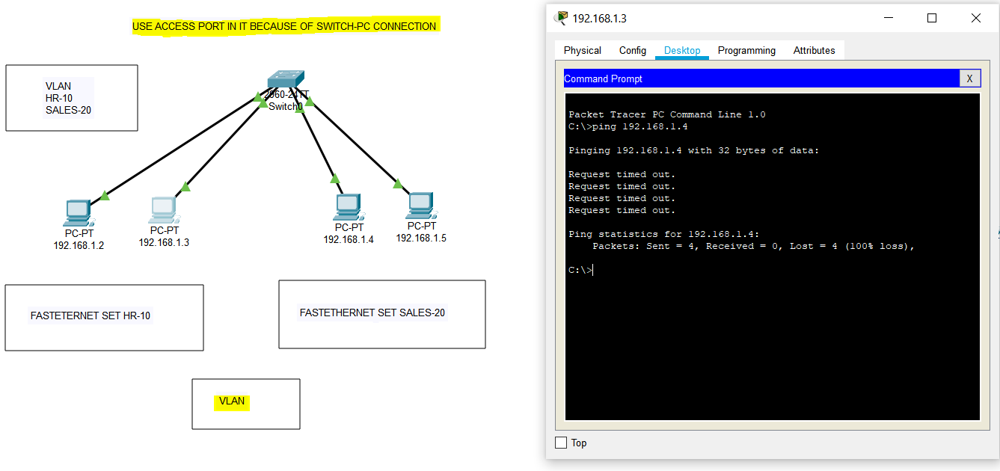 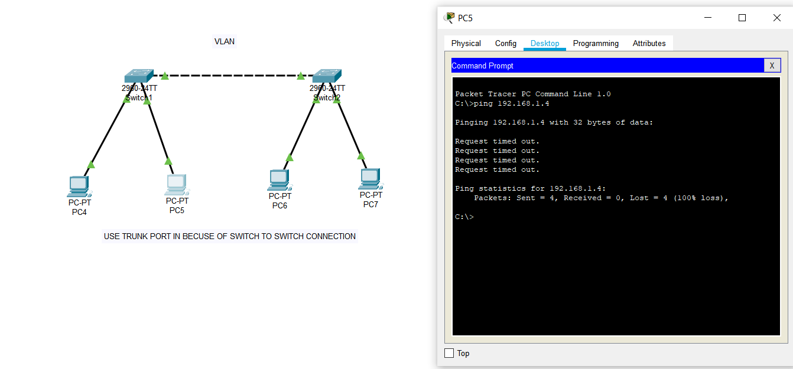ACL(Access Control List)
An Access Control List (ACL) is a set of rules that is usually used to filter network traffic. ACLs can be configured on network devices with packet filtering capatibilites, such as routers and firewalls.
ACLs contains a list of conditions that categorize packets and help us to determine when to allow or deny network traffic. They are applied on the interface basis to packets leaving or entering an interface. Two types of ACLs are available on a Cisco device:

ACL CREATION:
#ACCESS-LIST No. Permit/Deny Protocol Source IP Source WCM Destination IP Destination WCM Operator Port No.
EXAMPLE: #ACCESS-LIST 110 DENY TCP 192.168.1.10 0.0.0.0 10.0.0.2 0.0.0.0 EQ 80
#ACCESS-LIST 110 PERMIT ICMP ANY ANY
Steps of implementation of ACL in CLI:
ACL IMPLEMENTATION:
#INTERFACE TYPE No.
#IP ACCESS-GROUP No. IN/OUT
EXAMPLE:
#INTERFACE FASTETHERNET0/0
#IP ACCESS-GROUP 110 IN
After denying the request, we'll get this result.
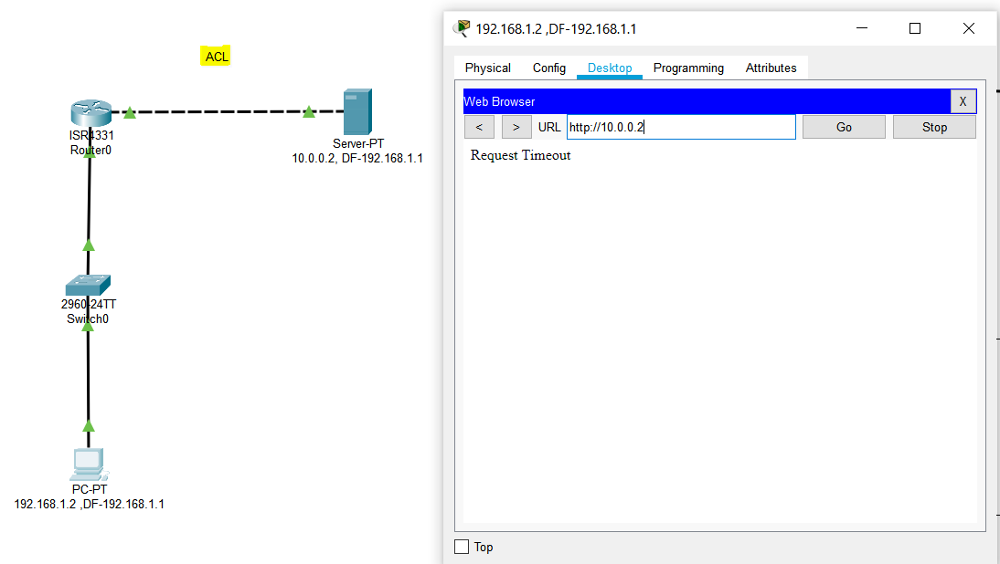
NAT(Network Access Technique)

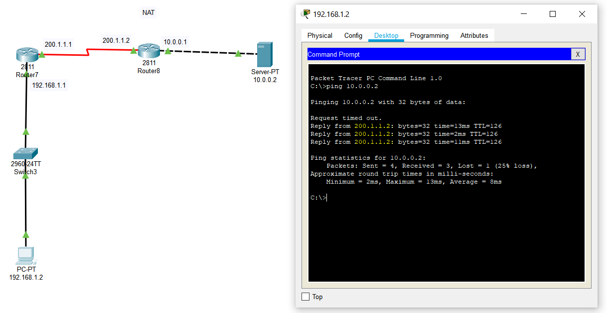
Firewall
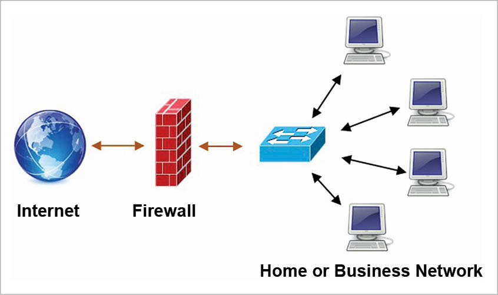
Types of firewall:
Record every stage from beginning.
Only current page is recorded.
Cisco Adaptive Security Appliance(ASA) Firewall :
Device that combines firewall, antivirus, intrusion prevention, VPN and SSL capabilities. Choose 5505 Firewall.
Firewall control traffic using two rules : Inbound, Outbound
Configuration steps:
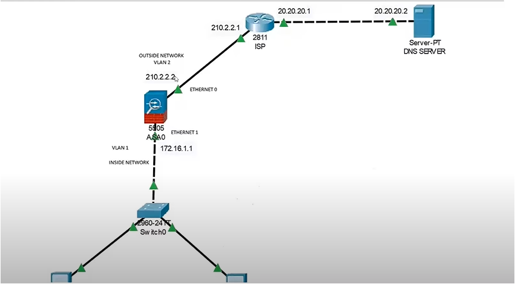
Network Scanning
Network scanning refers to the use of a computer network to gather information regarding computing systems.Network scanning is mainly used for security assessment, system maintenance, and also for performing attacks by attackers. It is the first step while containing information about any network.
The purpose of network scanning is as follows:
Network scanning consists of network port scanning as well as vulnerability scanning.
1) Network port scanning:
Network port scanning refers to the method of sending data packets via the network to a computing system's specified service port numbers (for example, port 23 for Telnet, port 80 for HTTP and so on). This is to identify the available network services on that particular system. This procedure is effective for troubleshooting system issues or for tightening the system's security.
2) Vulnerability scanning:
Vulnerability scanning is a method used to discover known vulnerabilities of computing systems available on a network. It helps to detect specific weak spots in an application software or the operating system (OS), which could be used to crash the system or compromise it for undesired purposes.
NMap
How many devices are ON in ur LAN?, IP addresses of all devices in our LAN, MAC address of all devices in ur LAN, Open Ports, Services running.
Wireshark
Splunk
Honeypot
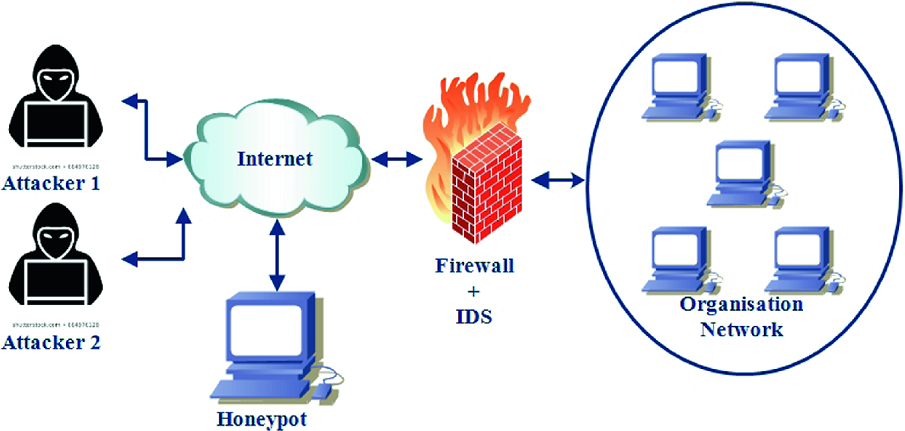
How it works ?
for instance, were in charge of IT security for a bank, you might set up a honeypot system that, to outsiders, looks like the bank’s network. The same goes for those in charge of — or researching — other types of secure, internet-connected systems.
By monitoring traffic to such systems, we can better understand where cybercriminals are coming from, how they operate, and what they want. More importantly, we can determine which security measures we have in place are working — and which ones may need improvement.
Example:
In 2015, internet security experts set up an online railway control system as honeypot bait. The goal was to study how criminals would attack projects where they could put the public at risk. In this case, the only damage done was to a model train set at a German technology conference. Over two weeks, the so-called “HoneyTrain” suffered 2.7 million attacks.
Types of honeypot:
1) Low interaction honeypot:
Low-interaction honeypots are less resource-intensive and gather rudimentary information regarding the kind of threat and where it came from. These are relatively simple to set up, and they make use of Transmission Control Protocol (TCP), Internet Protocol (IP), and network services. However, there is nothing inside the honeypot to hold the attacker’s attention for a considerable amount of time.
2) Medium interaction honeypot:
Mid-interaction honeypots imitate elements of the application layer, but they do not have an operating system. Their mission is to confuse an attacker or stall them so the organization has more time to ascertain how to react to the kind of attack in question.
3) High interaction honeypot:
A high-interaction honeypot is designed to get attackers to invest as much time as possible inside the honeypot. This gives the security team more opportunities to observe the targets and intentions of the attacker and more chances to discover vulnerabilities within the system.
A high-interaction honeypot may have extra systems, databases, and processes that the attacker will want to try to infiltrate. Researchers can observe how the attacker goes about looking for information, as well as which information they prefer and how they attempt to escalate access privileges. And production type can use all three types of honeypot.
Conclusion:
Honeypot is a useful tool for luring and trapping attackers, capturing information. Security is the essential element of any organization web sites, but though the security provided by the honeypots based on hardware setups are very expensive for small and medium scaled organization; a software based honeypot may be proven as a very effective security solution for these organizations.
Among all these types of Honeypot low-interaction Honeypot is the mostly used Honeypot, because it is easy to implement and manage. But the most secure and efficient Honeypot type is High-interaction Honeypot. These honeypots provide security as well as generates a log about all entries in the system which is very helpful to find the intrusive activity in the system.
But the honeypot must need to upgrade to new methods and attacks at some interval of time to provide security against new type to attacks. It can’t be said as a solution but it is a good supplement for the security system.